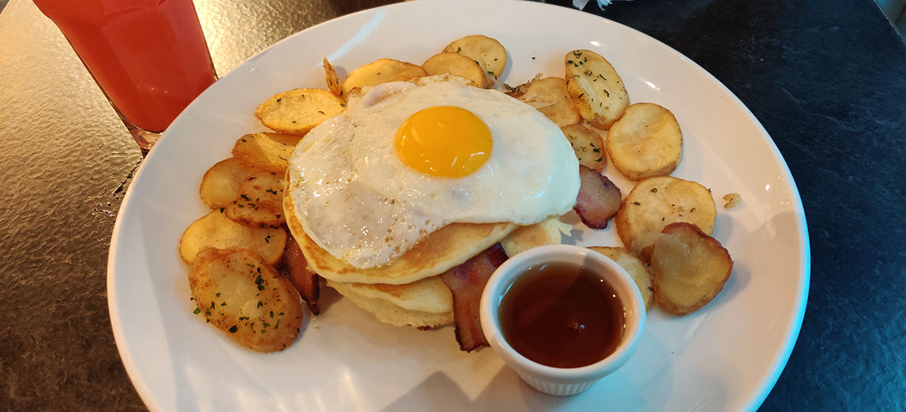
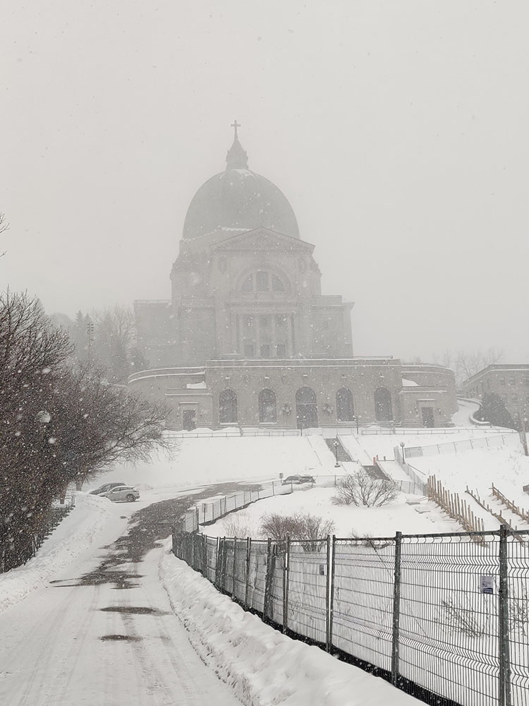
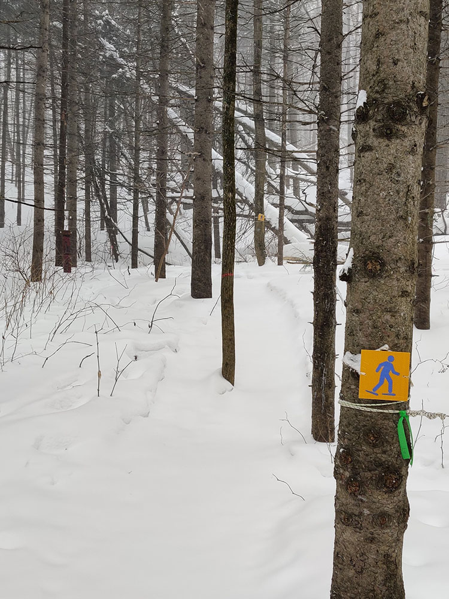
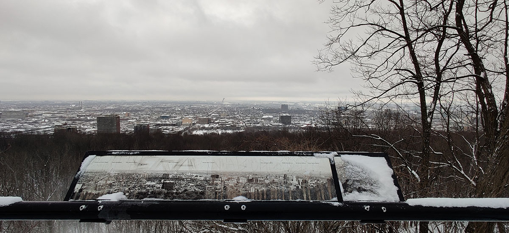
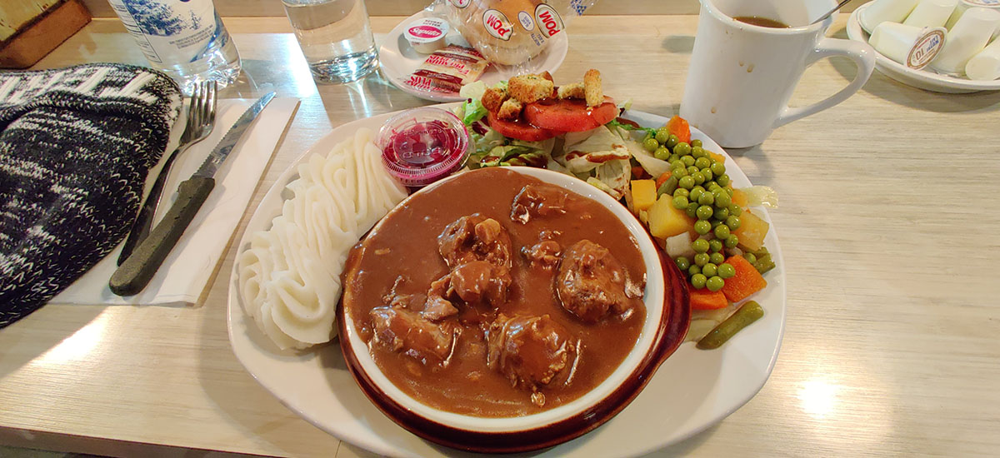
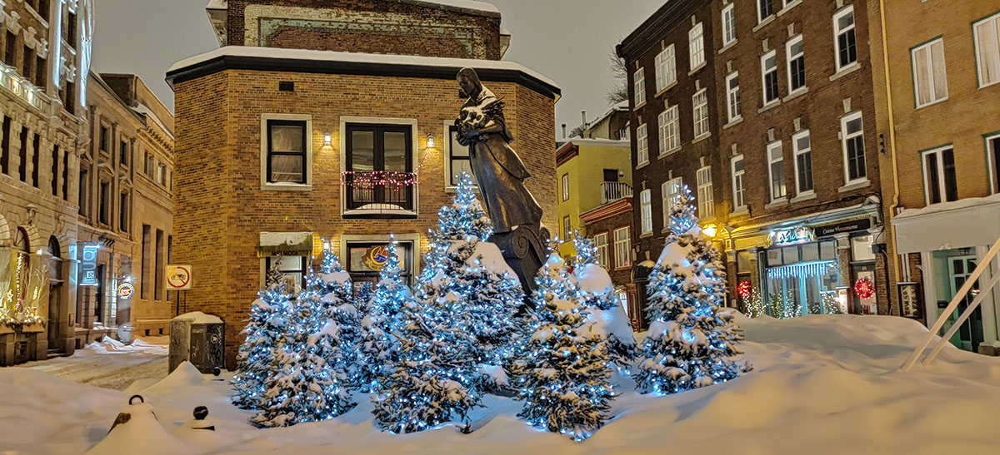

我出发之前查了蒙特利尔的未来一周天气，发现除了这一天有50%降水概率之外都是阴晴，而且气温也在-6度到0度之前摇摆。没想到今天早上出门吃早餐的时候还挺好，从早餐店出门的时候大雪已经把地上盖了薄薄一层了。因为今天下午就要去魁北克城，所以上午的计划是Mount Royal和旁边的St. Joseph Oratory。现在下了大雪，我犹豫了一会还是觉得无所谓，可以走一波。
对了，今天的早餐是Eggspectation，一个听名字就知道是做蛋料理的餐馆。我有点后悔自己点的是High Rise Pancakes，虽然在“早餐”归类里，但是鸡蛋在里面只是个配角。本来我也不会再来这里了，应该点他们的Egg Benedict之类的料理好好见识一下。不过这份巨型Pancakes还是很好吃的，貌似也是我这次旅行唯一一次吃枫糖浆。当然了吃完它是不可能的。

我们先略过我学会的第二个法语词Sortie，因为Sortie就是室内所有的紧急出口的红色的灯板上的那个词。我学会的第三个词就是Fermé（关闭）了。在这个季节，这个词经常出现在景区栈道、阶梯、设施入口的牌子上。St. Joseph Oratory作为加拿大最大的教堂，自然有很多个门——当然都Fermé了。指示牌导到了旁边的一个侧门，途中经过了一个贴墙登上观景阳台的盘旋楼梯——当然它也Fermé了。

在这么大的雪天登教堂，感觉我才是虔诚的信徒。
教堂本身是免费的，Tripadvior在这里没说清楚，网上挂着一个5刀的门票被我提前买了下来。我进来之后发现没人查票，入口没有售票厅，甚至连游客服务台都不在入口，一脸蒙圈。跟着路牌找到了藏在里面的游客服务台，一个老爷爷坐在柜台前认真地读着书，都没有发现我进来了。我在他面前站了几秒钟，然后才下决心说了声“Excuse Me”，果然他被我吓了一跳，然后他告诉我随便转转就好了，反正是免费的。我连忙道谢，实则心中策马奔腾。后来我才知道他里面有个小博物馆是收这个门票的，但是这个博物馆是我唯一没去的区域，我料到自己不会对天主教历史有什么兴趣。观景阳台什么的都Fermé了，还剩一个Basilica。（讲到这里我也不知道怎么翻译了，Oratory是整个“教堂”建筑，里面有好几层，有放蜡烛起到的地方，有几个小祈祷室，有观景台等等，Basilica是其中的做礼拜的房间，里面基本上就是凳子和讲台，不过很大）
这个亮堂堂的Basilica倒是很有意思，门口摆着两个宣传牌，一个写着“交响乐进行中”、另一个写着“每周日下午三点半有交响乐”，我看里面也像是一个人没有，倒确实传出来音乐的声音。于是我推门进去，走了几步意识到这是四面八方的喇叭在放音乐。又走了几步，音乐戛然而止，教堂变得完全安静：现在气氛就开始诡异了。再往前走几步，发现在一个之前被柱子挡住视野的偏僻座位上有一个女人，她回头看了我一眼，然后起身从前面的一个侧门走了。我跟着她出了门，这就直接到了外面，她沿向上的楼梯走了，我看到路牌指着下面不远处有一个小Chapel，便前去参观。这个Chapel原来是的确小，就像一个小木屋一样。回来后我又想看看那个女人往上走有什么，发现只有一个上了锁、没人进过的门，再往上是一条或许通向山里某个未知角落的车道。要是她真的会在雪地上留下脚印，那只可能是在短短的几分钟之内就被大学刷走了。我只好折返，再次穿过大教堂，当我刚刚关上进来时的门的时候，音乐突然再次响起。不知道大家有没有玩过一款《Forever Lost》的手机解谜游戏，这个诡异的气氛简直和这款（单方面封它为神作的）游戏如出一辙。
乘坐巴士来到皇家山的山脚，本来因为淋雪，羽绒服帽檐的一圈毛上沾满了雪花，在公交车里全部化成了水往下滴。下车之后冷风又一吹，我的帽檐就结了一圈冰，松软的毛陡然变成了莫西干。雪越来越大了，由于我没有围巾和手套，在直逼零下15度的山区已经感受到了非常大的压力。幸亏皇家山的入口很多，而且租器材和卖咖啡的Pavilion du Lac-aux-Castor离入口不远，而Lac-aux-Castor，即Beaver Lake，就是歇脚亭门外的“河狸湖”。由于雪太大，Snow Tubing也完全滑不动而关闭，我租了一双雪鞋打算走他们的snowshoeing trail。之前上山我完全看不到一个人，直到歇脚亭里才看到了些许租滑雪器材的人。而他们一旦拿着器材出门，就消散在附近的树丛中，运气好才能再碰到一两个人。我看他们很多人也都不会滑雪，只是绑着滑雪板在雪里走路罢了。我没有手套，如果也租一套，手怕是要给冻干。
山上的积雪比市区厚很多，有的地方即便有雪鞋，也可以踩下去很深。雪鞋线路唯一的指示是绑在树干上的方形标识，有的时候下一个标识绑的太远，再加上大雪天，要努力环顾四周才能发现。在空无一人的雪鞋线路上，大概也只有通过找路标获得一些乐趣。

期间我的手和脸是真的被冻到了极致：因为非常冷而感到热是我之前的极限，在这个阶段继续冷下去，会感觉周围空气是苦的，刮的风也是苦的，把手伸出来照个相，手会像睡姿不对一样麻掉。我走回“河狸湖”、还差几百米回到起点的时候，喉咙里面仿佛长跑过后一样冒着血味。碰到了一群松鼠正在鼓着腮帮子嚼果子吃，在手还没完全掉之前给它们拍了几张照，然后赶紧跑回歇脚亭喝咖啡去了。
Say Peanuts!
离开之前，本着白嫖公交日票的目的，搭了一程去了谷歌地图上标记的“Mount Royal Lookout”。它不在山上主要的游览区，在旁边一条沿山公路的半路，所以幸亏我没有用走的，走公路实在没意义。在那儿能看到Montréal城区的全景，本来因为眼前全是白花花的雪景，也看不到什么人，总有一种自己身处荒郊野外的感觉。从这个角度看到全景之后，才终于在脑海里建立起了皇家山与蒙特利尔城区的联系，在敬畏大自然之余感受到了一丝久违的人文气息。大概就是高中一篇语文阅读提到的“无我之境”和“有我之境”的区别吧。

下午就离开Montréal到了Québec City。本来在我下山去巴士站的路上，雪已经停了，但是到了魁北克城之后，这里大晚上的还在下大雪。因为没有正好衔接的公交，我决定走一公里到青旅。当然了，一看就是没有吸取上午的教训，而且现在手里还多了个大箱子，而且魁北克城的上下坡路比蒙特利尔更多更陡。有的路上雪比箱子滚轮还厚，我只好提着它爬坡。我感觉在我到青旅的时候已经变身成了艾裟。
晚饭在“Buffet de L’Antique”吃的。这是青旅推荐的一家好吃不贵的餐馆。的确，里面的Main Dish基本上都在20刀之内，最贵贵不过25。服务员告诉我，我点的猪肉肉丸烩也是她最喜欢的几道菜之一。我倒是猜测是不是所有标了“魁北克传统风味”的菜都是她喜欢的类型。

吃饱之后我决定在老城区随便转转，这一转不要紧，我发现完全不看地图、随便走走就把魁北克老城区的大部分景点给碰到了。一边感叹这个老城区有多么小，我一边意识到了自己接下来还要在这里待三整天，可能会非常的无聊。
哦对了，晚上闲逛时路过第一家开着门的纪念品店，就赶紧冲进去给自己买了双手套。感谢这位老板的救命之恩，兄弟们请把把感动打在公屏上。

老城区忘记了名字的一座雕塑
Last modified on 2020-02-23